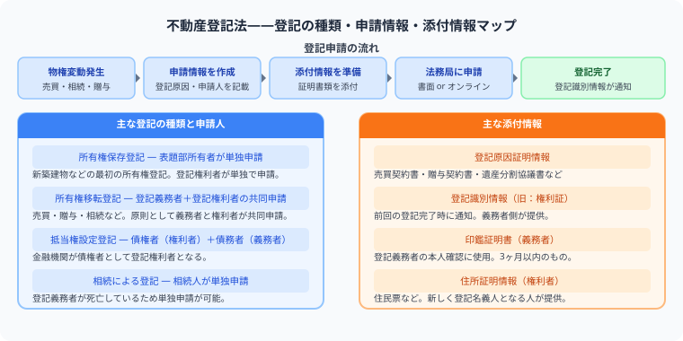

司法書士試験の不動産登記法とは？
所有権移転・抵当権設定を設例で解説
この記事でわかること（5秒まとめ）
- 不動産登記法は「権利変動」「申請人」「添付情報」の3点セットで覚える
- 所有権移転登記は権利者（買主）と義務者（売主）の共同申請が原則
- 登記識別情報は12桁の英数字、いわばパスワードのような情報
- 司法書士試験の合格率は例年5%前後の難関試験
大谷 一輝 より
こんにちは、大谷です！
不動産登記法は条文だけ見ると無味乾燥ですが、「AがBに土地を売って、Bが銀行から借金して抵当権を設定する」というような具体的な場面をイメージすると、一気に理解しやすくなります。今日は設例を使って整理していきます！
また、記事の末尾のほうにある【いいねボタン】をポチッと押してもらえると、めちゃくちゃ嬉しいです！
受験生
不動産登記法、添付情報の種類が多すぎて、何のためにあるのか覚えられません……。
大谷（簿記1級勉強中）
具体例で考えると整理できます。AがBに土地を2,000万円で売った場面を想像してください。登記原因証明情報は「本当に売買があった証拠（契約書）」、登記識別情報は「Aが今の所有者だと証明するパスワード」、印鑑証明書は「Aの実印が本物だと証明する書類」です。それぞれ「何を疑われないための書類か」を考えると覚えやすいですよ。
受験生
なるほど！じゃあ抵当権を設定する場合はどう変わるんですか？
大谷（簿記1級勉強中）
同じ土地の例で、Bが購入資金の一部を銀行から借りて、その土地に抵当権を設定するとします。この場合の申請人は抵当権者（銀行）と設定者（B）。登記原因証明情報は金銭消費貸借契約書・抵当権設定契約書に変わりますが、「誰が申請するか」「何を疑われないための書類か」という考え方の骨組みは所有権移転登記と同じです。
❓ 不動産登記法の基本——3点セットで見る
不動産登記法は「どんな権利変動が起きたか（登記原因）」「誰が申請するか（申請人）」「何を添付するか（添付情報）」の3点セットで覚えることが最短合格への近道です。

| 登記 | 場面 |
|---|---|
| 所有権保存登記 | 新築建物など、最初に所有権を登記する |
| 所有権移転登記 | 売買、贈与、相続などで所有者が変わる |
| 抵当権設定登記 | 借入れの担保として抵当権をつける |
| 抵当権抹消登記 | 弁済などで抵当権を消す |
| 変更・更正登記 | 住所変更や登記内容の誤りを直す |
📝 設例で見る：所有権移転登記と抵当権設定登記
設例
Aが所有する甲土地（2,000万円）をBに売却した。Bは購入資金の一部として銀行Cから1,500万円を借り入れ、甲土地に抵当権を設定した。
①所有権移転登記
申請人：権利者B（買主）・義務者A（売主）の共同申請
添付情報：登記原因証明情報（売買契約書）、登記識別情報（A）、印鑑証明書（A）、住所証明情報（Bの住民票）、代理権限証明情報（委任状）
申請人：権利者B（買主）・義務者A（売主）の共同申請
添付情報：登記原因証明情報（売買契約書）、登記識別情報（A）、印鑑証明書（A）、住所証明情報（Bの住民票）、代理権限証明情報（委任状）
②抵当権設定登記
申請人：抵当権者C（銀行）・設定者B（担保提供者）の共同申請
添付情報：登記原因証明情報（金銭消費貸借契約書・抵当権設定契約書）、登記識別情報（B）、印鑑証明書（B）
申請人：抵当権者C（銀行）・設定者B（担保提供者）の共同申請
添付情報：登記原因証明情報（金銭消費貸借契約書・抵当権設定契約書）、登記識別情報（B）、印鑑証明書（B）
登記識別情報とは：12桁の英数字からなる、いわばパスワードのような情報です。新たな登記名義人になった際に法務局から通知され、次にその不動産について登記を申請するとき（今回のBなら、将来抵当権を設定するとき）の本人確認資料として使います。
🔍 記述式は早めに見る
記述式は、登記申請書を書かせる問題です。最初から解けなくても、どんな形式で出るかを早めに見ておくと、択一の知識が記述につながりやすくなります。
学習のコツ：不動産登記法は民法と切り離さないでください。売買、相続、抵当権設定など、民法上の権利変動を先に確認してから登記手続きを見ると理解しやすいです。
📋 まとめ：不動産登記法 早見表
見るべき3点権利変動・申請人・添付情報
所有権移転登記権利者（買主）・義務者（売主）の共同申請
抵当権設定登記抵当権者（債権者）・設定者の共同申請
登記識別情報12桁のパスワード的な情報